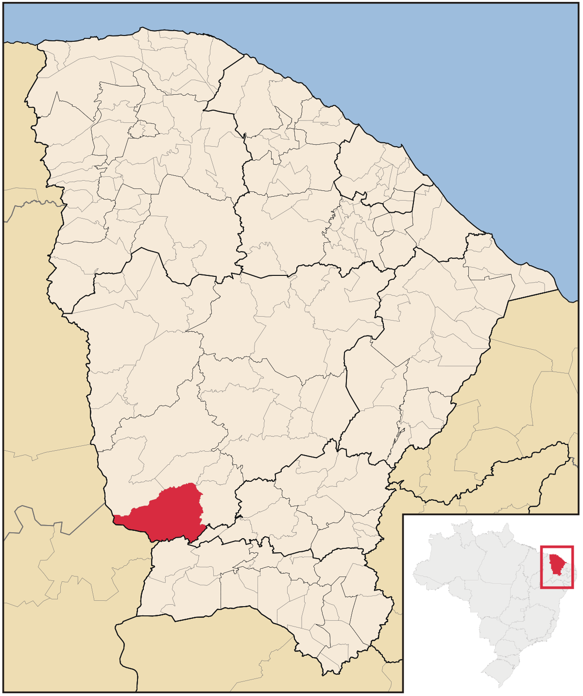
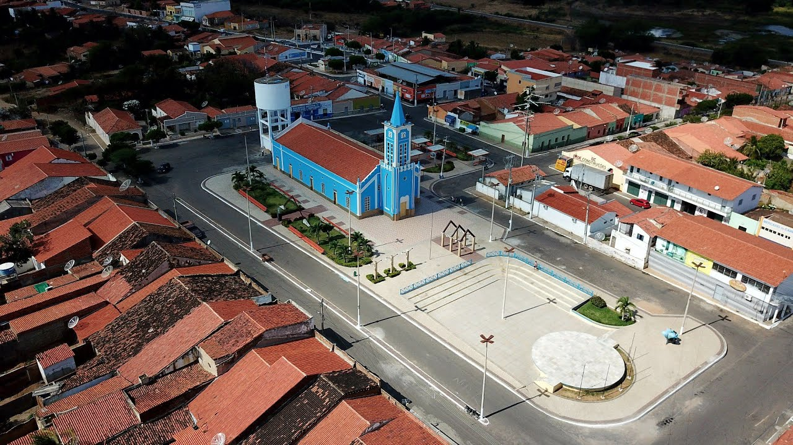

HISTÓRIA DO CAUÃ
Cauã é um garoto de 15 anos nascido nas proximidades de uma cidade chamada Aiuaba, não se sabe ao certo quando foi o seu nascimento, mas temos informações privilegiadas que pode ter ocorrido por volta do século 19, em meio a revolução industrial, onde comeu tanta comida do mundo, que o mergulhou em fome.
CAUÃ E A FOME MUNDIAL
Após Cauã nascer, o mesmo foi iluminado com um grande poder, esse poder consistia em um apetite infinito. As pessoas da época o consideraram um ser com dons divinos, então fizeram de tudo para o manter feliz. Depois de comer tanto, o mundo se viu em estado de emergência, sem suprimentos para todos, o que acabou gerando uma grande revolução, conhecida como revolução industrial.
Alguns registros como esse, são prova de que cauã habituava o mundo em plena época da revolução.
DE ONDE VEIO?
Por mais que não se saiba ao certo, é possível através de depoimentos dado pelo próprio garoto, que ele tem umaafeição doentia por uma ciade chamda aiuaba, localizada no interior do ceará
É impossível saber quem o criou, já que aparentemente vem de origem divina, só se sabe que o mesmo age diretamente em prol da prosperidade da cidade
Pode-se ver aqui, imagens aéreas do local onde cauã tanto dedica seu espirito patriota.
Como ele é nos dias de hoje
Nos dias de hoje, Cauã se vê estudando em um colégio de tempo integral chamado monsenhor, ele conta com um grupo de amigos inccíveis denominados tallas. Eles são os unicos capazes de frear Cauã e evitar um apocalipse dois.


É importante ressaltar que o mesmo se configura como gay, havendo relatos de já ter chupado pênis
No mais, ele defende a soberania da raça aiuabense, e diz que ela é superior a todos os locais do planeta
Então é isso, espero que tenh aprendido bastante sobre o Cauã e tenha entendido um pouco da sua história.